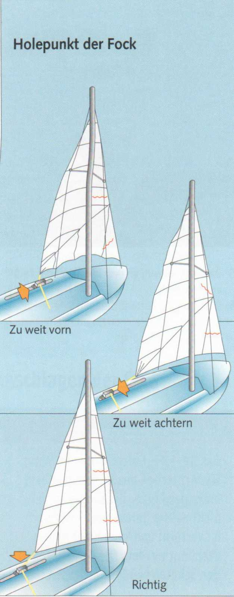
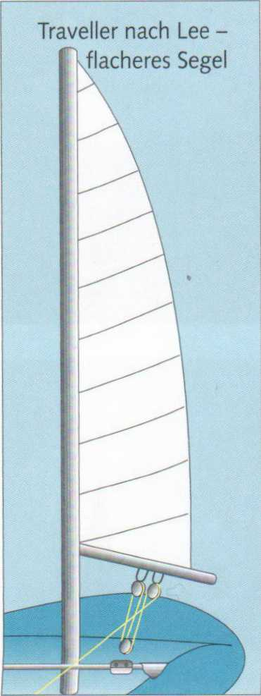
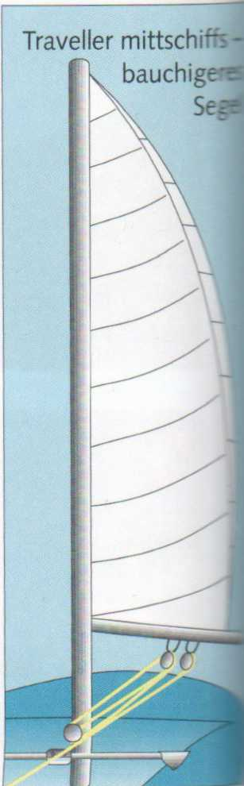
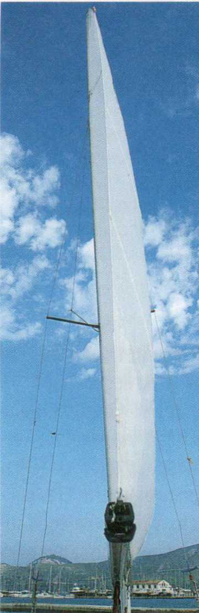
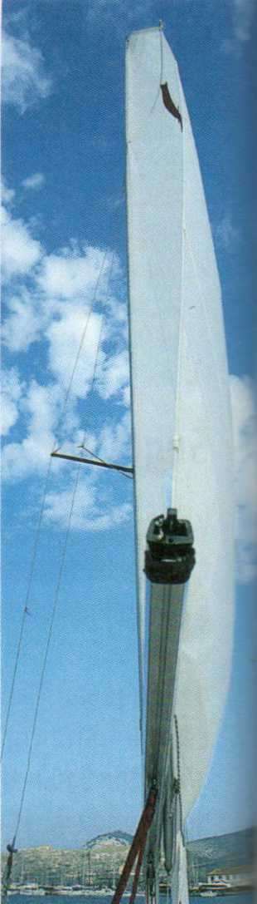

50
PRAXIS DES SEGELNS
Nur ein optimal getrimmtes Segel garantiert optimale Segeleigenschaften. Richtiger oder falscher Trimm beginnt bereits beim Segelsetzen. Beide Segel sollten faltenfrei gesetzt werden.

Die Fock sollte stets stramm durchgesetzt sein, damit das Vorliek der Fock faltenfrei steht. Eine weitere Trimmmöglichkeit ergibt sich durch die Position des Fockholepunkts. Durch dessen Verschieben auf der Leitschiene lässt sich das Achter-und Unterliek auch während des Segelns trimmen. Der Segeltrimm lässt sich während der Fahrt sehr gut mithilfe der Windfäden (teil tales) kontrollieren.
► Falten am Vorliek: Das Fall ist nicht steif genug durchgesetzt.
► Falten am Unterliek: Die Fockschotleitöse muss weiter nach achtern versetzt werden.
► Falten am Achterliek: Die Fockschotleitöse muss weiter nach vorne versetzt werden. Vorausgesetzt, die Fock ist vom Segelmacher nicht verschnitten.
Bei dichtgeholter Fockschot müssen Unter- und Achterliek gleichmäßig unter Zug stehen und dürfen nicht killen, das heißt flattern. Der Schotzug muss etwa der Winkelhalbierenden zwischen Achter- und Unterliek entsprechen.




Ähnliches gilt für den Trimm des Großsegels. Falten am Vorliek bedeuten: Das Großfall oder der Halsstrecker ist nicht steif genug durchgesetzt. Eine weitere Möglichkeit, die Vorliekspannung zu regulieren, bietet die Cunningham-Kausch.
Allgemein gilt für den Trimm des Großsegels:
► bei leichten Winden Bauch ins Segel rein,
► bei viel Wind Bauch aus dem Segel raus.
Der Bauch, die durch den Schnitt der Bahnen dem Segel mitgegebene Wölbung, lässt sich durch unterschiedliche Spannung in den Lieken beeinflussen. Unabhängig von der Windstärke ist ein gewölbteres Segel auf Kursen mit achterlichem Wind wirksamer - ein flaches auf Am-Wind-Kursen.
Die einfachste und effektivste Maßnahme, um ein flaches Segel bauchiger zu bekommen, ist, den Unterliekstrecker loser zu fahren. Dadurch rutscht das Unterliek etwas in Richtung Mast.
Der Twist, eine Verwindung des Achterlieks, die durch das Bedienen verschiedener Komponenten erreicht wird, bietet weitere effektive Trimmmöglichkeiten. So wird zum Beispiel das Achterliek bei starkem Wind im oberen Bereich offener und bei Schwachwind geschlossener gefahren.